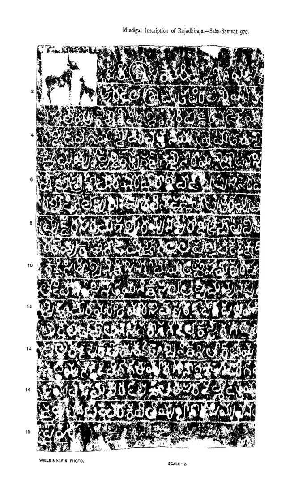

Minḍigal inscription of Rājādhirāja; Śaka-Samvat 970
No. 23.—MINDIGAL INSCRIPTION OF RAJADHIRAJA ;
SAKA-SAMVAT 970.
BY H. KRISHNA SASTRI, B.A.
Mindigal is a village about eleven miles north-west of Chintâmapi, the head-quarters of the Chintâmapi tâluka of the Kôlâr district in the Mysore State. The older form of the name, Miqđumgallu, occurs in line 9 of the inscription, which also states that the village belonged to the district of Koyyakore-nâđu.
The subjoined record was first brought to my notice by a goldsmith of Mindigal, who sent me for examination a pencil-sketch of the writing on the stone, expecting some hidden treasure to be referred to therein. It was, however, found out to be an important inscription of the Chôla king Râjâdhirâja, dated both in the Śaka era and in a year of his reign, and I was at once deputed by Dr. Hultzsch to prepare inked estampages of the stone, from which I now edit the inscription. The slab on which the inscription is written measures 5' by 4' 9" and is fixed into the platform of the Sômêsvara temple in the fields to the north-east of Mindigal. At the top, to the proper right of lines 1 and 2, are engraved the figures of a cow and a calf. The characters are of the old Kanarese type and are neatly engraved between horizontal lines. The language of the inscription is throughout Kanarese, with the exception of the Tamil words kôv=Irâjakêsaripadmar=âna uđeyâr in l. 3, and yânđu in l. 4.
As regards the orthography of the inscription, I have to make the following remarks:—(1) Except in the case of â, the secondary forms of long vowels do not differ from those for the corresponding short ones. (2) The anusvâra is represented by a small dot, which is placed at the right upper corner of the letter to which it belongs. The same symbol is used in l. 1 for the cypher, as in other Kanarese and Telugu inscriptions. (3) The superscribed form of r does not occur in the inscription ; and where such a form is required, it is indicated by the doubling of the consonant to which it was meant to be prefixed. (4) The anusvâra takes the place of other nasals before ga (ll. 9 and 13), gha (l. 5), da (l. 5) and pa (l. 8). (5) The virâma is
1 Read 2ntyam ||.
2 Metre of this and the following verses: Ślôka (Anushtubh).
3 Instead of pha, la or lam seems to have been originally engraved.
4 Read 3labhêna.
represented, as in modern Kanarese and Telugu, by a zigzag line attached to the talekattu. (6) The consonants ra and ra, la and la are used in their proper places, except in the cases of alivañ for alivañ (l. 11) and golañgañ for golagañ (l. 14).
In galdeyuvañ (l. 15 f.) and Bāṇardshyuvan (l. 17) the accusative termination is, in strict accordance with the rules of grammar, affixed only to the last of the nouns which are the objects of the same verb, while the others remain in the nominative case combined with the copulative conjunction uñ; but in Sáleyu[ñ*] (l. 3) the accusative termination is omitted. The word sainvatsaradal (l. 1 f.), which ought to stand after muvattaneya (l. 4), has been misplaced.
The inscription records the gift of some land and of an oil-mill to the temple of Sômésvara at Minđuñgallu by the Dañdanáyaka Appimayya, surnamed Rájèndra-Chôla-Brahmamáráya (ll. 4 ff. and 11 f.), who governed the Márájaváđi Seven-thousand country from his camp at Vallúru. This grant was made when a certain Bairayya, surnamed Rájèndra-Chôla-Pômpalamáráya,1 the son of Muddarasa of Muruganamale (l. 7 ff.), had ropaired the temple of Sômésvara. The land granted was irrigated by two tanks,—Pallavakattu (ll. 9 and 12) and Bađagana-Pômpalakattu (l. 13 f.), the first of which had been built by Bairayya and the second by Appimayya.
The record is dated in the Šaka year 970, which corresponded to the current Sarvajit-sainvatsara and to the thirtieth year of the reign of (the Chôla king) Rájakésarivarman, alias Rájádhirájadéva, 'who took the head of the glorious Virapáñdya and the Sále of the Chéra king.' This date corresponds to A.D. 1047-482 and has enabled Professor Kielhorn to calculate the dates of four other inscriptions of the same king and to show that his reign commenced between the 15th March and the 3rd December A.D. 1018,3 i.e. during the reign of his predecessor Rájèndra-Chôla I. whose reign extended from A.D. 1011-12 to at least A.D. 1033.4 Consequently Rájádhirája must have been the co-regent of Rájèndra-Chôla I. and did not rule independently before the death of the other.5 The bírudas of the chiefs Appimayya and Bairayya, viz. Rájèndra-Chôla-Brahmamáráya and Rájèndra-Chôla-Pômpalamáráya, were evidently acquired by them during the reign of Rájádhirája's predecessor Rájèndra-Chôla I. The conquests of Rájádhirája are described in detail in an inscription of his 29th year at Mapimangalam. One of his achievements is stated to have been that he routed the Chéra king and followed the example of his ancestor Rájarája I. in destroying the ships at Kándałúr-Sálai.5 This is the incident alluded to by the bíruda 'Séramana Sáleyu[ñ*] koñđa,' which is given to Rájádhirája in l. 2 f. of the subjoined inscription.6 The 'taking of the head of Virapáñdya' is not mentioned in the historical introduction of the Mapimangalam inscription, which refers to three other Páñdya enemies of Rájádhirája.5
Of the proper names contained in this inscription the following admit of identification. The Márájaváđi Seven-thousand province (l. 6), over which Appimayya ruled, is mentioned in other inscriptions as Mahárájapáđi, Máráyapáđi and Márjaváđa-rájya, and Vallúru (l. 6 f.), the residence of Appimayya, has been identified with a village of the same name, about 8 miles north-west of Cuddapah.7 Muruganamale (l. 7) is identical with Murugamale, a village near Chintámañi. The first of the two tanks mentioned in the inscription, viz. Pallavakattu, appears to have been situated near the Sômésvara temple (ll. 9-12). The ruins of it still exist a few yards to the east of the same temple.
1 [On the Pompala family compare above, p. 171, note 1.—E. H.]
2 Compare above, Vol. IV. p. 216.
3 See ibid. p. 218.
4 [This will be shown by Prof. Kielhorn under the Chôla date No. 34.—E. H.]
5 South-Ind. Inscr. Vol. III. p. 52.
6 Sále is the Kanarese equivalent of Sálai, i.e. Kándałúr-Sálai.
7 South-Ind. Inscr. Vol. III. p. 106. In his Epigraphia Carnatica, Vol. IV. Introduction, p. 20, Mr. Rice mentions Vallúr as being situated "to the north-east of Mysore and described as the capital of the Rámarájaváđi Seven-thousand." This name is perhaps a mistake for Mahárájaváđi.
Plate 1 is bound after this page.
TEXT.1
| 1 | Svasti śrī [||*] | Saka-varisha | 970-nē | yī | Sabbajitu-saṅva- | |
| 2 | tsaradal | śrīmat-Virapāṇḍiyana | taleyum | Sērama- | ||
| 3 | na | Sāleyu[ī*] | koṇda | kōv-Irājakēsaripadmar-āna2 | uḍeyār śrī-Rājādhi- | |
| 4 | rājadēva[r*]gge | yāṇḍu | muvattanyea | [|*] | śrīmat-[Da]ṇdanāyakam | A- |
| 5 | ppimayyan-appa | o[r*]-kkettu-gaṇḍam | gaṇda-Nārāyaṇa | Chōlana-simgham | Rājēmdra- | |
| 6 | Chōla-Brahmamārāyar | Mārājavāḍ[i] | Ēlusāsiravan-ājutta | V[a]llīt- | ||
| 7 | ra | bīḍinal | sukha-sa[m]ghāta-vinōdadim3 | ājutt-ire [|*] | Muruganamaleya | |
| 8 | Muddarasara | magam | Bairayyan-app[a] | Rājēndra-Chōla-Pōmpalamārāya- | ||
| 9 | r | Koyyakore-nāda | Miṇḍungallal | Pallavakaṭṭ-endu | hosa keṛeya[m] | |
| 10 | kaṭṭisi | tūmban-ikkisi | bhūmiyam | tilḍi4 | Sōmēsvaradēvara dēgulava | |
| 11 | [a]livam5 | [sō]disi | soteyan-ikkisal | Appimayyan-appa | Rājēndra-Chōla- | |
| 12 | 6Brahmamārāyar | ṇiy-ūra | Sōmēsvaradēva[r*]gge | Pallavagaṭṭina | tūbina | |
| 13 | modalal | Chōlana-simgham | ko[l]agadal | kaṇḍugam | galḍ[e]yum Baḍagaṇa-[Pōm]- | |
| 14 | pa[la]ka[t]ṭ-endu | keṛeya | kaṭṭi[si*] | tūmban-ikkisi | ā keṛeyal ai-golaṅgam8 | |
| 15 | gal[d]eyum | nan[dā]-dīvigege | īy-ūra | g[ā]pam | onḍum bha[ṭ*]tā[ra*]rige pattu | koļagam ga- |
| 16 | lḍeyuvam | Sōmēsvaradēva[r*]gge | arasar-damma-dattiy-āge | bi[ṭta]r | [||*] I9 | |
| 17 | dammavan-a[j]idavar | kavileyum | Būṇa[r]āsiyuvan-a[i]da | pāpakke | ||
| 18 | pōpar [||*] |
TRANSLATION.
(Line 1.) Hail! Prosperity! In the Śaka year 970 (which was) this (current) Sarvajit-saṅvatsara (and) the thirtieth year (of the reign) of king Rājakēsarivārmīn, alias the lord śrī-Rājādhirājadēva, who took the head of the glorious Virapāṇḍya and the Sāle of Sērama (i.e. the Chēra king);—
(L. 4.) while the glorious Daṇḍandyaka Appimayya, alias Rājēndra-Chōla-Brahmamārāya, a chief who alone makes (his enemies) tremble, a (very) Nārāyaṇa among heroes, the lion of the Chōla (king), was governing the Mārājavāḍi Seven-thousand (province) (and) was immersed in the delight of pleasing conversations in (his) camp at Vallūru;—
(L. 7.) when Bairayya, alias Rājēndra-Chōla-Pōmpalamārāya, the son of Muddarasa of Muruganamale, having caused to be constructed at Minḍungallu in Koyyakore-nāḍu a new tank called Pallavakaṭṭu and a sluice to be built, having levelled the ground and having examined the cracks in the temple of Sōmēsvaradēva, had (them) plastered,— Appimayya, alias Rājēndra-Chōla-Brahmamārāya, gave to (the temple of) Sōmēsvaradēva in this village (one) kaṇḍuga of paddy-land, (measured) by the koļaga (named after) Chōlana-Singa,10 at the base of the sluice of the Pallavakaṭṭu (tank);
(L. 14.) and, having caused to be constructed a tank called the Northern Pōmpalakaṭṭu and a sluice to be built, (he gave) to (the temple of) Sōmēsvaradēva, as a gift for the merit of
1 From four inked estampages.
2 Read 'varmas=.
3 Read -saṅkathā. Saṅghāta might be translated by 'crowd' or 'abundance,' but the phrase occurs in many other inscriptions as sukha-saṅkathā-vinōdadim.
4 Read tirḍi and compare with it the Tamīl tirutii which, as Mr. Venkayya informs me, means 'having reclaimed.'
5 Read aļivam.
6 Read Brahmao.
7 Read īy=.
8 Read -goļagam.
9 Read l.
10 According to l. 5 this was a biruda of the Daṇḍandyaka Appimayya.
the king,1 five koļagas of paddy-land at that tank, one oil-mill of this village for a perpetual lamp, and ten koļagus of paddy-land for the priest.
(I. 16.) He who destroys this charity will incur the sin of destroying cows and (the city of) Bāparāsi.2
1 Viz. his sovereign, the Chōja king Rājādhirāja.
2 I.e. Vārānasi (Benares).
